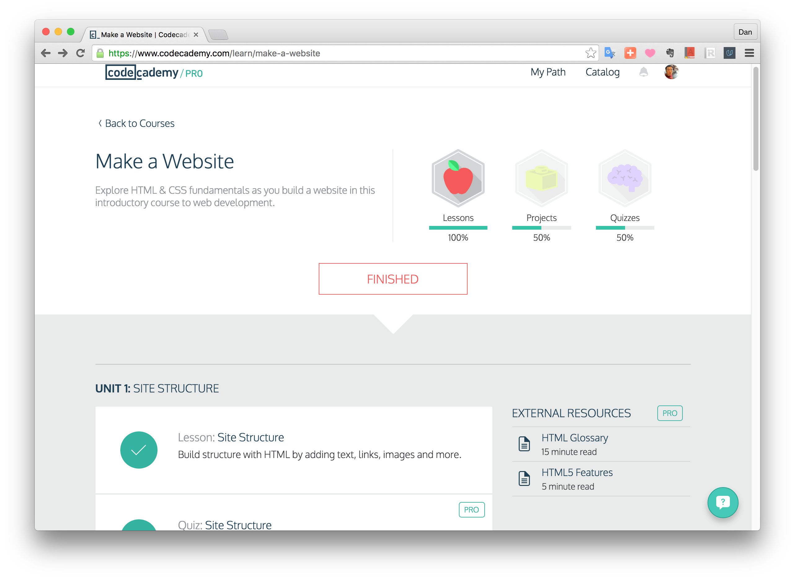

<!DOCTYPE HTML>

<html>
<head>
</head>
<body> 
	<canvas id="c" width="400" height="400"></canvas>
	<!---->
	<script>
		var c = document.querySelector("#c");
		var ctx = c.getContext("2d");

		/*
		//drawImage	
		var image = new Image();

		image.onload = function() {
			console.log("Loaded image");
			ctx.drawImage(image, 0, 0, c.width, c.height);
			var savedImage = c.toDataURL(); //Image Saving
			window.open(savedImage);        // 
		}

		image.src = "htmlcanvas_practice.png";
		*/

		//Drawing Rectangles
		//ctx.fillRect(100, 100, 100, 100);

		//ctx.strokeRect(50, 50, 50, 50);

		/*
		//More about Rectangles
		ctx.fillStyle = "blue"; 
		// Start at (0,0) and draw a 50px x 50px blue rectangle.
		ctx.fillRect(0,0,50,50);
		// Start at (0,0) and clear a 25px x 25px rectangle.
		ctx.clearRect(0,0,25,25);
		// erace entire canvas
		ctx.clearRect(0, 0, c.width, c.height);
		c.width = c.width;
		*/

		//Paths
		/*ctx.beginPath();
		ctx.moveTo(10, 10);
		ctx.lineTo(50, 50);
		ctx.lineTo(50, 10);
		ctx.lineTo(10, 10);
		//ctx.fill();
		//ctx.stroke();*/

		//Paths quiz
		//ctx.beginPath();
		//ctx.rect(50,50, 100, 100);
		//ctx.stroke();
		//or
		/*ctx.strokeRect(50,50, 100, 100);
		ctx.moveTo(75,75);
		ctx.lineTo(125, 125);
		ctx.lineTo(125, 75);
		ctx.lineTo(75, 75);
		ctx.fill();

		//Scailing
		scale(x, y); 
		ctx.scale(2, 3); //x * 2, y * 3

		//Translation
		translate(x, y);
		ctx.translate(20, 40); // x +20px, y +40px

		//Rotation
		ctx.rotate(angleRadians); //radians = degreess * (Math.PI/180)

		//Order of operations
		scale objects -> rotate -> translate*/

		//Saving and Restoring Canvas State
		/*var c = document.querySelector("#c");
		var ctx = c.getContext("2d");

		ctx.fillStyle = "blue";
		ctx.fillRect(0,0,50,50);

		ctx.fillStyle = "green"
		ctx.fillRect(100,100,10,10);

		ctx.fillStyle = "blue";
		ctx.fillRect(200,10,20,20);

		//this is better.
		var c = document.querySelector("#c");
		var ctx = c.getContext("2d");

		ctx.fillStyle = "blue";
		ctx.fillRect(0,0,50,50);

		// Save state with blue fill
		ctx.save();
		ctx.fillStyle = "green";
		ctx.fillRect(100,100,10,10);
		// Restore to blue fill
		ctx.restore();

		ctx.fillRect(200,10,20,20);*/

		/*
		//colors
		ctx.strokeStyle = "#33CC33";

		ctx.strokeRect(50,50, 100, 100);
		ctx.moveTo(75,75);
		ctx.lineTo(125, 125);
		ctx.lineTo(125, 75);
		ctx.lineTo(75, 75);
		
		ctx.fillStyle = "blue";
		ctx.fill();

		//Drawing Text
		//ctx.strokeText("HELLO UDACITY!", 50, 10);
		ctx.fillText("HELLO UDACITY!", 50, 10);*/

		//Drawing Text Quiz
		ctx.font = "36pt Calibri";
		ctx.textAlign = "center";
		

		ctx.fillStyle = "white";
		ctx.fillText("CANVAS MEMES!", c.width/2, 40);

		ctx.strokeStyle = "black";
		ctx.lineWidth = 3;
		ctx.strokeText("CANVAS MEMES!", c.width/2, 40);


	</script>
</body>
</html>		